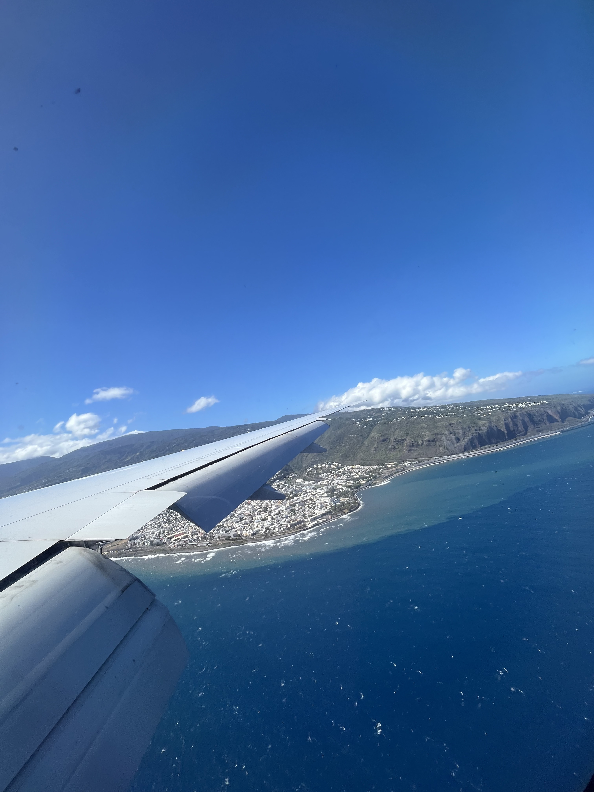
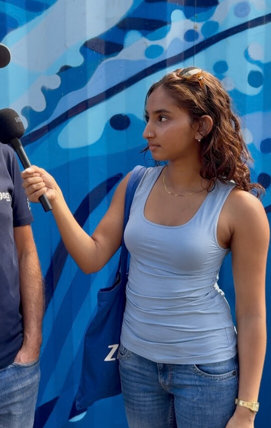
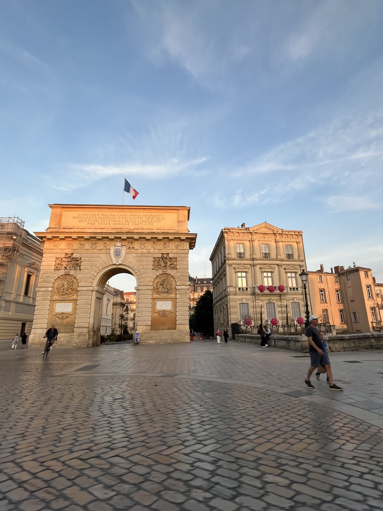
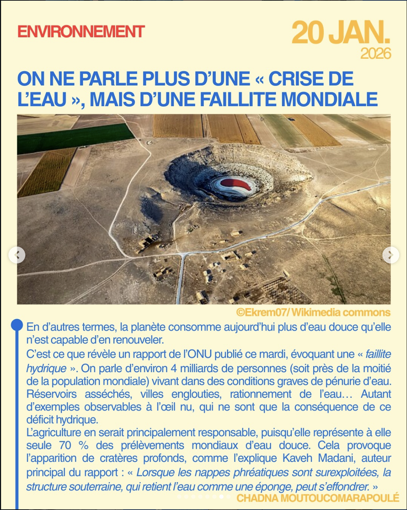
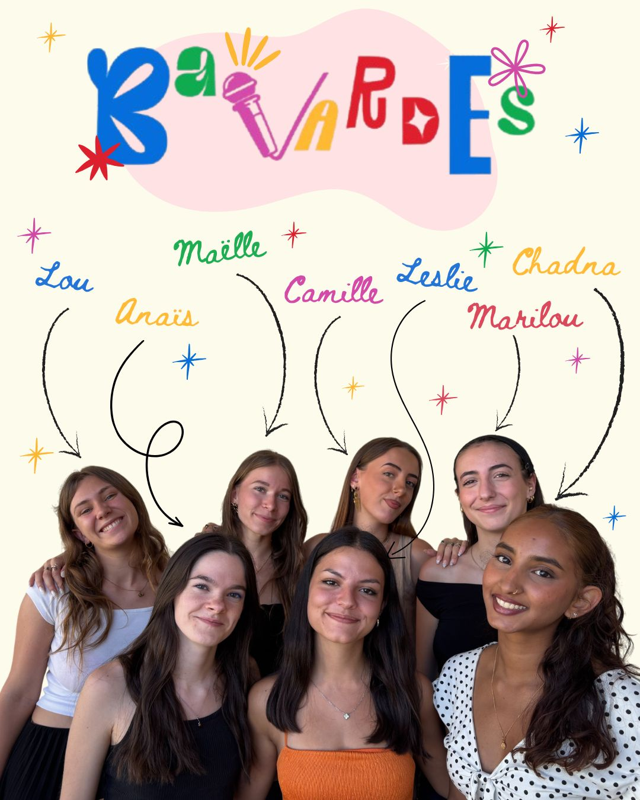
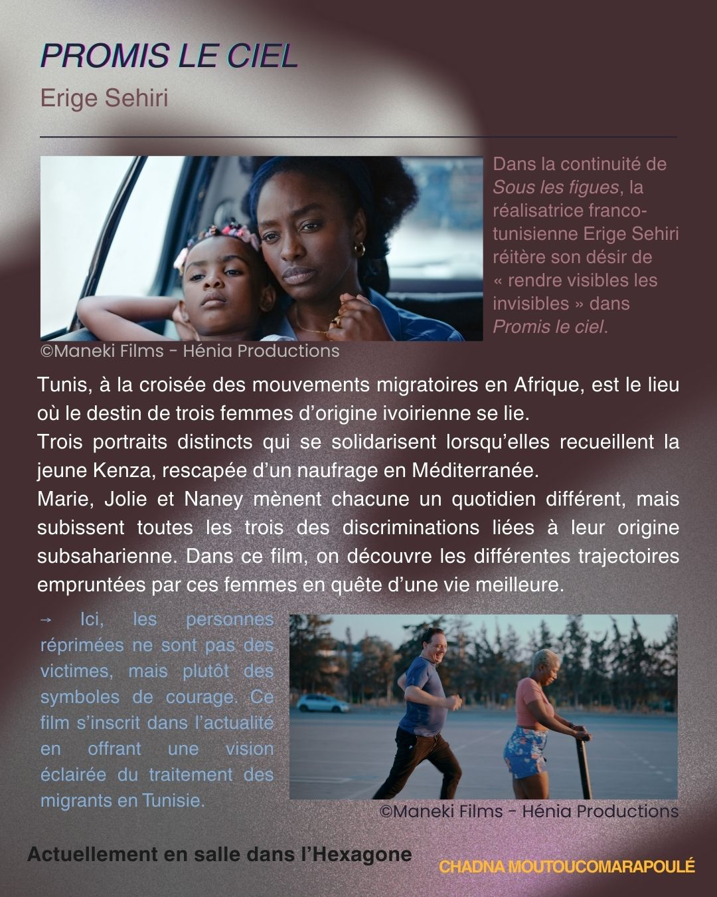

Candidature en Master 1 Journalisme à l'université de Lorraine
<profil>
Étudiante âgée de 20 ans, d'origine réunionnaise. Je suis sensible aux problématiques de société, en particulier celles qui touchent les minorités. Je souhaite devenir journaliste pour un magazine de société sur le web.
Bienvenue sur mon autoportrait numérique. J'ai appris le langage HTML lors d'un enseignement optionnel de spécialisation web. Dans le cadre de ma formation, j'ai suivi des enseignements en sciences du langage au sein d'un parcours en journalisme. À présent, je souhaite développer mes compétences, dans une école consciente des évolutions du journalisme.



Depuis mon installation en 2023, ma vie se partage entre La Réunion et Montpellier. Si j'ai fait le choix de partir c'est pour me garantir un enseignement de qualité dans le domaine du journalisme. Il me tenait à cœur de mettre toutes les chances de mon côté pour intégrer une école reconnue par la profession. Si j'en ai l'opportunité, je retournerai sur mon île pour contribuer à l'évolution des médias.
Votre texte ici...
Votre texte ici sur vos outils, logiciels et veille...



En septembre dernier, avec 6 amies, nous avons fondé Bavardes média sur Instagram. Chaque semaine, nous postons des articles résumant l'actualité récente. Nous proposons aussi des formats plus longs sur les conflits internationaux, des recommandations cinéma ou encore des interviews exclusives. À travers ce projet, je développe mon suivi de l'actualité, en multipliant les sources. Je m'entraine également à vulgariser l'information, le but étant de rendre l'information accessible et compréhensible. Cela me permet aussi de rencontrer des personnes et commencer à me créer un réseau.